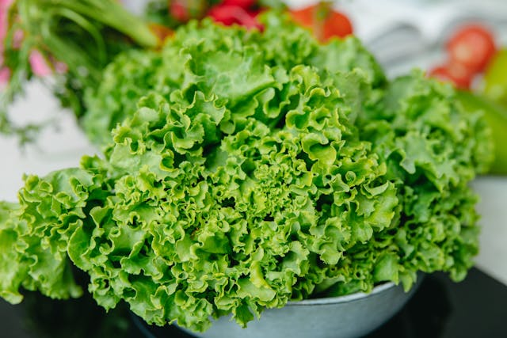
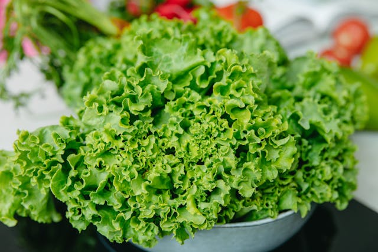

Classes of Food
Protein
Proteins are complex molecules made up of smaller units called amino acids.
There are 20 different amino acids, and the sequence and arrangement of these amino acids determine the structure and function of proteins.
- Meat
- Poultry
- Egg
- Fish
- Milk

 Show more
Show more
Vitamins
Vitamins are organic compounds required in small amounts for various bodily functions.
They can be classified into water-soluble and fat-soluble vitamins.
- Fruits
- Vegetable oil
- Meat
- Whole grains
- Dairy products
 Show more
Show more
Minerals
Minerals are inorganic substances required in small amounts for various physiological processes in the body.
Minerals such as sodium, potassium, and magnesium are involved in nerve transmission and muscle contraction.
- Dairy products
- Leafy green vegetables
- Meat
- Whole grains
- Fish
 
Show more

Show more


 Show more
Show more


 Show more
Show more